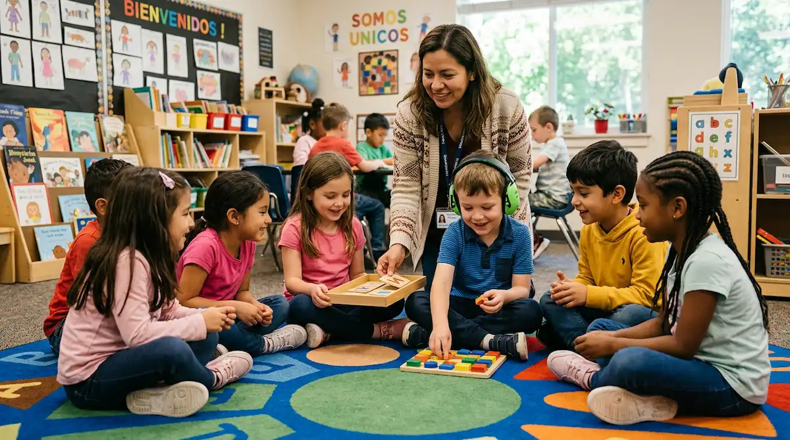

Alianzas y apoyos en el aula: hacia un colegio inclusivo
El entorno escolar representa un gran escenario de socialización y aprendizaje, pero también un reto exigente para un niño o niña en el espectro autista. Las aulas suelen acumular estímulos intensos —ruidos colectivos, luces fluorescentes, cambios de actividad imprevistos y dinámicas sociales complejas—. Para que la experiencia educativa sea constructiva, la colaboración estrecha entre la familia y el centro escolar resulta indispensable.
Construyendo un equipo coordinado entre familia y escuela
La base de una verdadera inclusión reside en compartir información transparente y constructiva. Cuando los docentes comprenden el perfil sensorial y comunicativo del alumno, las conductas de desconexión o saturación dejan de interpretarse como falta de disciplina y se enfocan como lo que son: señales de que el sistema nervioso necesita ajustes y apoyos específicos.
"Un aula inclusiva no busca que el alumno encaje a la fuerza, sino adaptar el entorno y la metodología para que su talento y su aprendizaje florezcan con seguridad."
Adaptaciones metodológicas y espaciales en el aula
Garantizar el bienestar del menor en la escuela no requiere privilegios excesivos, sino medidas de equidad muy concretas:
1. Cuidado de la sobreestimulación: Ubicar al alumno en un lugar del aula que reduzca el bullicio excesivo, o permitirle el uso de protectores auditivos en momentos de gran ruido ambiental, previene el colapso sensorial.
2. Anticipación de los cambios: Utilizar agendas visuales en el aula y avisar con claridad sobre las transiciones de tarea ayuda a que el menor mantenga la estabilidad emocional y participe con confianza.
Caminando juntos hacia el éxito escolar y emocional
Mantener canales de comunicación fluidos y reuniones de seguimiento periódicas consolida una red de seguridad muy potente. Con una escuela informada, empática y dispuesta a colaborar mano a mano con la familia, el colegio se transforma en un espacio estimulante de logros, amistad y crecimiento personal.
➔ Volver al índice de Autismo (TEA)